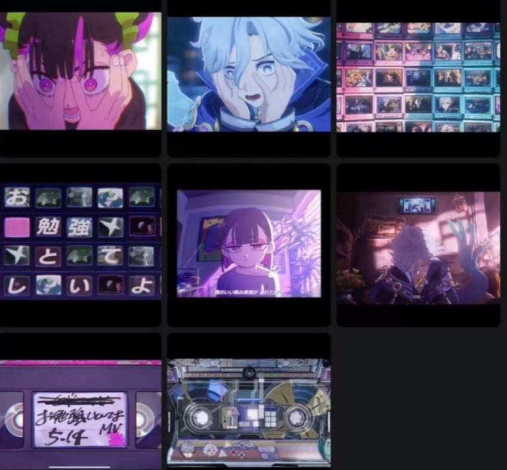
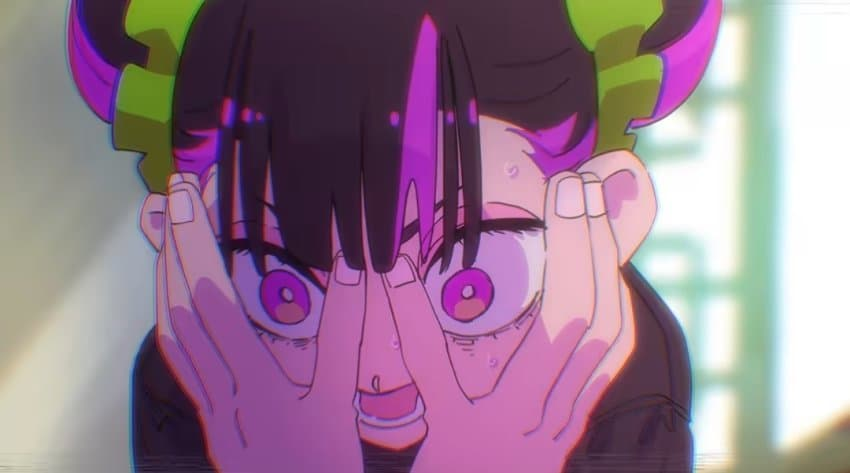
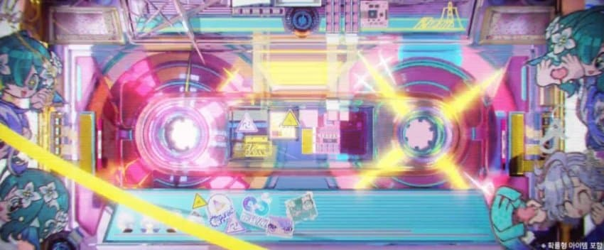
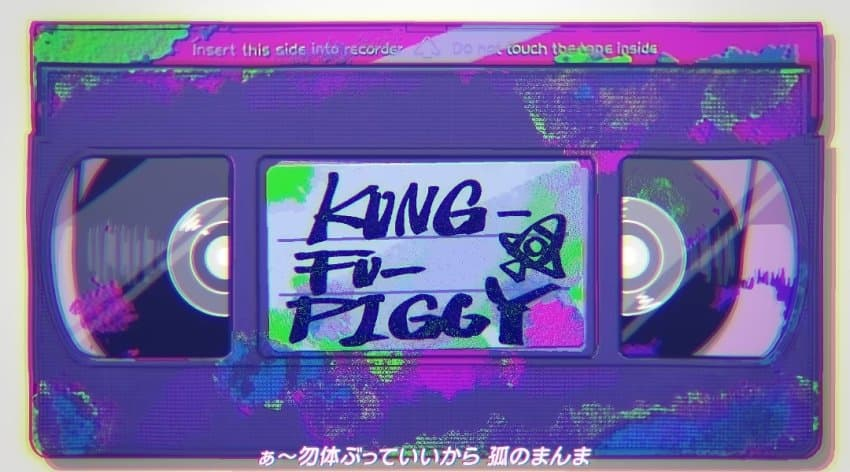

역시 기특한 게임





어쩌면 오마쥬
https://x.com/JW_ztmyo/status/2117594298728481053
공식 영상인데 즛토마요 MV와 비슷한 컷이 몇 개 있습니다. 음악까지 비슷한 게 정말 우연일까요…?
'참고했다'고 하더라도, 원작을 언급하지 않고 상업용 영상에 사용하는 건 어떨까요?
어디까지나 제 개인적인 의견입니다만.
https://x.com/Rockingstaapcb/status/2117653949927047549
원신, 베끼기 너무 심해요.
ZUTOMAYO는 한물간 것도 아니고, 대표 인물도 있잖아요. 일부러 도용해 놓고서 비판하지 말라는 건가요?
인터넷에 흔한 소재도 아닌데, 멋대로 가져다 쓰고 "오마주"라고 하다니요. 마이너 밴드에 의뢰할 예산도 없는 건지, 훔칠 수밖에 없는 건가요?
표절이냐 오마주냐를 두고 UFC중
댓글
댓글 보관 대기 중입니다. 원문 응답 오류가 있으면 다음 실행에서 다시 수집합니다.